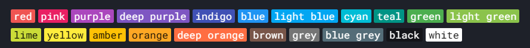
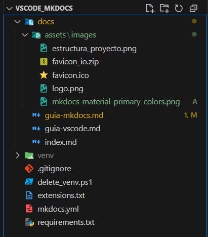

MkDocs (Python Package)
MkDocs es una herramienta que nos permite generar sitios web estáticos a partir de archivos Markdown.
Es muy útil para crear documentación técnica y publicarla fácilmente, por ejemplo, en GitHub Pages.
🧩 1. Requisitos previos
Antes de comenzar, debemos asegurarnos de tener Python 3 instalado en nuestro sistema.
Podemos comprobarlo desde una terminal ejecutando:
python --version
o
python3 --version
Si no lo tenemos, podemos descargarlo desde la página oficial:\ 👉 https://www.python.org/downloads
Durante la instalación, es importante activar la opción:
✅ "Add Python to PATH"
También necesitamos tener disponible pip, que normalmente se instala junto a Python:
pip --version
🧩 2. Crear un entorno virtual (opcional, pero recomendado)
Para evitar conflictos con otras herramientas y mantener las dependencias organizadas, podemos crear un entorno virtual en el directorio donde vayamos a trabajar:
python -m venv .venv
Luego lo activamos según el sistema operativo:
- En Windows (CMD):
.venv\Scripts\activate
- En PowerShell:
.venv\Scripts\Activate.ps1
- En Linux/macOS:
source .venv/bin/activate
🧩 3. Instalar MkDocs
Con el entorno activado, instalamos MkDocs con:
pip install mkdocs
También podemos instalar el tema Material for MkDocs, que nos permitirá generar documentación más visual y moderna:
pip install mkdocs-material
🧩 4. Crear un nuevo proyecto con MkDocs
Creamos un nuevo proyecto ejecutando:
mkdocs new mi-documentacion
Esto generará una estructura como esta:
mi-documentacion/
├── docs/
│ └── index.md
└── mkdocs.yml
-
La carpeta
docs/contendrá nuestros archivos.md. -
El archivo
mkdocs.ymlnos servirá para configurar el sitio web.
🧩 5. Ejecutar el servidor local
Accedemos a la carpeta del proyecto:
cd mi-documentacion
Y arrancamos el servidor de desarrollo con:
mkdocs serve
Esto abrirá un sitio web local en:
👉 http://127.0.0.1:8000
A medida que editemos los archivos Markdown, los cambios se reflejarán automáticamente en el navegador.
🧩 6. Exportar los módulos del entorno virtual
Si hemos utilizado un entorno virtual para instalar MkDocs y sus extensiones, es importante generar un archivo con la lista de dependencias.
De esta forma, otras personas podrán instalar exactamente los mismos paquetes y versiones.
Paso 1. Asegurarnos de que el entorno virtual está activado
Antes de exportar, activamos el entorno si no lo estaba ya:
- En CMD:
.venv\Scripts\activate
- En PowerShell:
.venv\Scripts\Activate.ps1
- En Linux/macOS:
source .venv/bin/activate
Paso 2. Generar el archivo requirements.txt
Ejecutamos:
pip freeze > requirements.txt
Esto generará un archivo llamado requirements.txt en el directorio actual, con todas las dependencias instaladas en el entorno.
Ejemplo de contenido:
click==8.1.7
Jinja2==3.1.2
Markdown==3.5.2
mkdocs==1.5.3
mkdocs-material==9.5.13
...
Paso 3. Incluirlo en el proyecto
Este archivo debe añadirse al repositorio (por ejemplo, junto al archivo mkdocs.yml) para que otros desarrolladores puedan instalar las mismas dependencias con:
pip install -r requirements.txt`
🧩 7. Configurar el archivo mkdocs.yml
El archivo mkdocs.yml es el archivo de configuración principal del proyecto.
Desde aquí podemos definir:
-
El nombre del sitio web.
-
El tema visual (como
material). -
El menú de navegación.
-
Otros ajustes como el idioma, favicon, estilos personalizados, etc.
📌 Título del sitio y tema
Abrimos el archivo mkdocs.yml y configuramos al menos estas dos líneas básicas:
site_name: Mi Documentación
theme:
name: material
Esto define el nombre del sitio y activa el tema material (si lo hemos instalado previamente con pip install mkdocs-material).
📌 Navegación
Podemos personalizar el orden y los títulos del menú con la clave nav.
Por ejemplo, si hemos creado varios archivos .md dentro de docs/, como:
docs/
├── index.md
├── guia-vscode.md
├── guia-mkdocs.md
Entonces configuramos la navegación así:
nav:
- 0. Inicio: index.md
- 1. Visual Studio Code: guia-vscode.md
- 2. MkDocs: guia-mkdocs.md
Esto genera un menú superior con los nombres que hayamos indicado, enlazando a las páginas correspondientes.
🛠️ Resultado completo de ejemplo
Este sería un archivo mkdocs.yml básico:
#mkdocs.yml
site_name: Documentación VsCode + MkDocs
theme:
name: material
nav:
- 0. Inicio: index.md
- 1. Visual Studio Code: guia-vscode.md
- 2. MkDocs: guia-mkdocs.md
✅ Probar los cambios
Una vez guardado el archivo mkdocs.yml, volvemos a ejecutar:
mkdocs serve
Y actualizamos el navegador en http://127.0.0.1:8000 para ver el nuevo menú y título aplicados.
🧩 8. Personalización visual del sitio
MkDocs permite personalizar el diseño de nuestro sitio si estamos utilizando el tema material.
Podemos modificar los colores, el favicon, el logo, el idioma y más elementos visuales para adaptarlo a nuestras necesidades.
📚 Documentación oficial del tema Material:
👉 https://squidfunk.github.io/mkdocs-material/setup/changing-the-colors/
🎨 Colores primario y de acento
Podemos elegir un color principal (barra superior) y un color de acento (enlaces, botones, resaltados, etc.).
Ejemplo en mkdocs.yml:
theme:
name: material
palette:
primary: indigo
accent: blue
Colores disponibles: red, pink, purple, deep purple, indigo, blue, light blue, cyan, teal, green, light green, lime, yellow, amber, orange, deep orange, brown, grey, blue grey.

📝 Referencia de colores disponibles:
👉 https://squidfunk.github.io/mkdocs-material/setup/changing-the-colors/#primary-and-accent-colors
🌐 Idioma del sitio
Podemos indicar el idioma para que los elementos de la interfaz (como "Search" o "Table of contents") aparezcan traducidos:
theme:
name: material
language: es
🌍 Lista de idiomas disponibles:
👉 https://squidfunk.github.io/mkdocs-material/setup/changing-the-language/
🖼️ Logo y favicon: ¿en qué se diferencian?
Antes de configurarlos, conviene saber qué función tiene cada uno:
-
Favicon: es el pequeño icono que aparece en la pestaña del navegador, en los marcadores o cuando se guarda el sitio como acceso directo.
-
Logo: es la imagen que aparece en la barra de navegación del sitio, junto al título. Suele ser más grande y representativo.
Ambos elementos se configuran dentro del bloque theme: en el archivo mkdocs.yml, y deben estar ubicados dentro de la carpeta docs/, preferiblemente organizados en una subcarpeta assets/images/.
📁 Estructura recomendada del proyecto
docs/
├── index.md
├── guia-vscode.md
├── guia-mkdocs.md
├── assets/
│ └── images/
│ ├── logo.svg ✅ Logo (preferentemente en formato SVG)
│ └── favicon.png ✅ Favicon (formato PNG de 32x32 o similar)
⚙️ Configuración correcta en mkdocs.yml
theme:
name: material
language: es
palette:
primary: indigo
accent: blue
logo: assets/images/logo.svg
favicon: assets/images/favicon.png
✅ Ambos deben definirse dentro de la sección
theme:.
⚠️ Ya no se debe utilizarextra.favicon, ya que es una práctica obsoleta y no compatible con las últimas versiones del tema Material.
📝 Recomendaciones importantes
-
El logo puede estar en formato
.svgo.png. Se recomienda.svgpor su nitidez y escalabilidad. -
El favicon debe estar en formato
.pngo.ico, preferentemente en resolución 32x32 px. -
Asegurarse de que los archivos existen y están correctamente nombrados (sin espacios ni mayúsculas).
-
Después de cualquier cambio, reiniciamos el servidor con
Ctrl + Cy luegomkdocs serve. -
Si el favicon no se actualiza, forzamos la recarga en el navegador con
Ctrl + Shift + Ro abrimos en modo incógnito.
📚 Enlace a la documentación oficial
👉 https://squidfunk.github.io/mkdocs-material/setup/changing-the-logo-and-icons/
📙 9. Contenido de mkdocs.yml y Estructura del Proyecto
El contenido final que tenemos actualmente en nuestro documento de configuración mkdocs.yml:
#mkdocs.yml
site_name: Documentación VsCode + MkDocs
repo_url: https://github.com/javiDocenteInformatica/vscode_mkdocs
theme:
name: material
language: es
palette:
primary: indigo
accent: blue
logo: assets/images/logo.png
favicon: assets/images/favicon.ico
nav:
- 0. Inicio: index.md
- 1. Visual Studio Code: guia-vscode.md
- 2. MkDocs: guia-mkdocs.md
La estructura completa del proyecto actualmente se verá como sigue:
